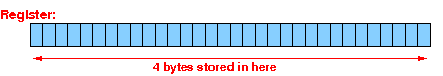
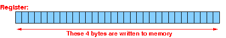
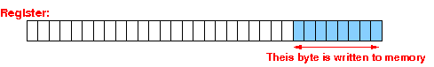
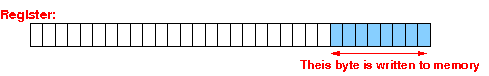

- We have seen the
basic form of
the load/store instruction of
the ARM processor in these
webpages
(
load
and
store)
I repeat the (summary of the) material here for review (and reminder).
-
Syntax and meaning of the
basic form of
the load register instruction
is:
Syntax Meaning of the instruction ---------------- -------------------------------------------------- ldr rN, [rM] Load 4 bytes from memory at the address given in rM into the (destination) register rN The 4 bytes are stored in the register as follows:  ldrsh rN, [rM] Load 2 bytes from memory at the address given in rM into the (destination) register rN AND fill the left half of register with the sign bit The 2 bytes are stored at the right and then sign extended to 32 bits:
 ldrsb rN, [rM] Load 1 byte from memory at the address given
in rM into the (destination) register rN
AND fill the left 3/4 of register with the sign bit
The byte is stored at the right and then
sign extended to 32 bits:
ldrsb rN, [rM] Load 1 byte from memory at the address given
in rM into the (destination) register rN
AND fill the left 3/4 of register with the sign bit
The byte is stored at the right and then
sign extended to 32 bits:

-
Syntax and meaning of the
basic form of
the store register instruction
Syntax Meaning of the instruction ---------------- -------------------------------------------------- str rN, [rM] Store 4 bytes from register rN to memory (consecutively) at the address given in register rM The 4 bytes are taken from the register as follows:  strh rN, [rM] Store 2 bytes from register rN to memory (consecutively) at the address given in register rM The 2 bytes are taken from the register as follows:
 strb rN, [rM] Store 1 byte from register rN to memory (consecutively) at
the address given in register rM
The byte is taken from the register as follows:

strb rN, [rM] Store 1 byte from register rN to memory (consecutively) at
the address given in register rM
The byte is taken from the register as follows:

Although the basic form is sufficient to access simple variable, it is not adequate when we need to compute the address of an array element using:
address of array element A[i] = base address (A) + i×size(one array element)
- The load instruction has
a more advanced form:
Syntax and meaning of the base+offset form of the load register instruction is:
Syntax Meaning of the instruction ---------------- -------------------------------------------------- ldr rN, [rM,off] Load 4 bytes from memory at the address given by rM+off into the (destination) register rN The 4 bytes are stored in the register as follows: ldrsh rN, [rM,off] Load 2 bytes from memory at the address given by rM+off into the (destination) register rN AND fill the left half of register with the sign bit The 2 bytes are stored at the right and then sign extended to 32 bits:
ldrsb rN, [rM,off] Load 1 byte from memory at the address given
by rM+off into the (destination) register rN
AND fill the left 3/4 of register with the sign bit
The byte is stored at the right and then
sign extended to 32 bits:
For offset, you can use:
- A constant value #n
The base+offset load instruction syntax is then:
ldr rN, [rM, #n] // Effective address = rM + n ldrsh rN, [rM, #n] ldrsb rN, [rM, #n]or
- A value stored in
a register
The base+offset load instruction syntax is then:
ldr rN, [rM, rX] // Effective address = rM + rX ldrsh rN, [rM, rX] ldrsb rN, [rM, rX]
How to use the base + offset form of the load instruction to access array elements:
- Move the
base address of the
array into
some register
(e.g.: rx)
- If the
array index is
a constant:
- Pre-compute the
offset
(because the index is a
constant, the
offset will also be
constant)
Let the pre-computed offset be equal to n
- use ldr ..., [rx,#n], ldrsh ..., [rx,#n] or ldrsb ..., [rx,#n] to access the array element depending on the data type of the array
If the array index is not a constant:
- Compute the offset and
store the result in
another
register
(e.g.: ry)
- Then use ldr ..., [rx,ry], ldrsh ..., [rx,ry] or ldrsb ..., [rx,ry] to access the array element depending on the data type of the array
- Pre-compute the
offset
(because the index is a
constant, the
offset will also be
constant)
- A constant value #n
- The store instruction
also has a more advanced form:
Syntax and meaning of the base+offset form of the store register instruction is:
Syntax Meaning of the instruction ---------------- -------------------------------------------------- str rN, [rM,off] Store 4 bytes from register rN to memory (consecutively) at the address given by the sum rM+off The 4 bytes are taken from the register as follows: strh rN, [rM,off] Store 2 bytes from register rN to memory (consecutively) at the address given by the sum rM+off The 2 bytes are taken from the register as follows:
strb rN, [rM,off] Store 1 byte from register rN to memory (consecutively) at
the address given by the sum rM+off
The byte is taken from the register as follows:
For offset, you can use:
- A constant value #n
The base+offset store instruction syntax is then:
str rN, [rM, #n] // Effective address = rM + n strsh rN, [rM, #n] strsb rN, [rM, #n]or
- A value stored in
a register
The base+offset store instruction syntax is then:
str rN, [rM, rX] // Effective address = rM + rX strsh rN, [rM, rX] strsb rN, [rM, rX]
How to use the base + offset form of the store instruction to update an array element:
- Move the
base address of the
array into
some register
(e.g.: rx)
- If the
array index is
a constant:
- Pre-compute the
offset
(because the index is a
constant, the
offset will also be
constant)
Let the pre-computed offset be equal to n
- use str ..., [rx,#n], strh ..., [rx,#n] or strb ..., [rx,#n] to update the array element depending on the data type of the array
If the array index is not a constant:
- Compute the offset and
store the result in
another
register
(e.g.: ry)
- Then use str ..., [rx,ry], strh ..., [rx,ry] or strb ..., [rx,ry] to update the array element depending on the data type of the array
- Pre-compute the
offset
(because the index is a
constant, the
offset will also be
constant)
- A constant value #n